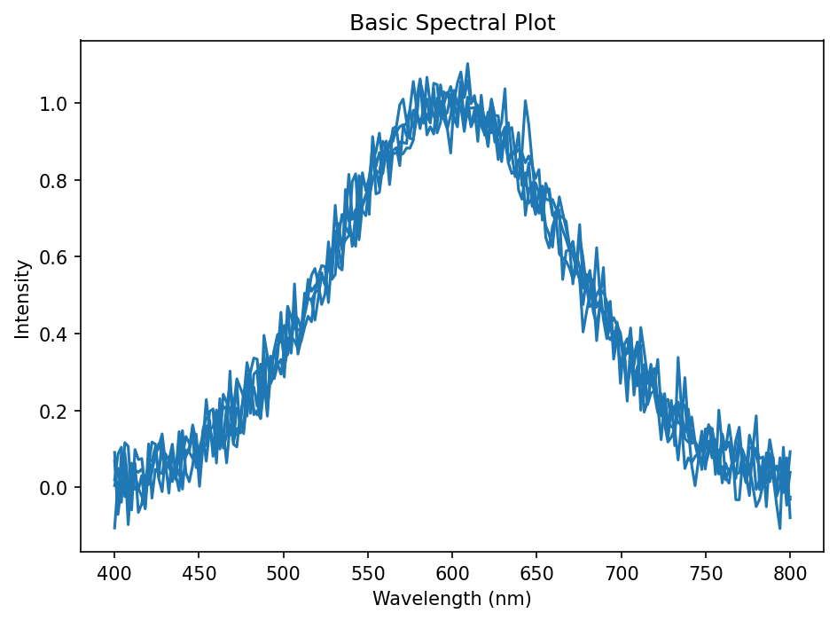
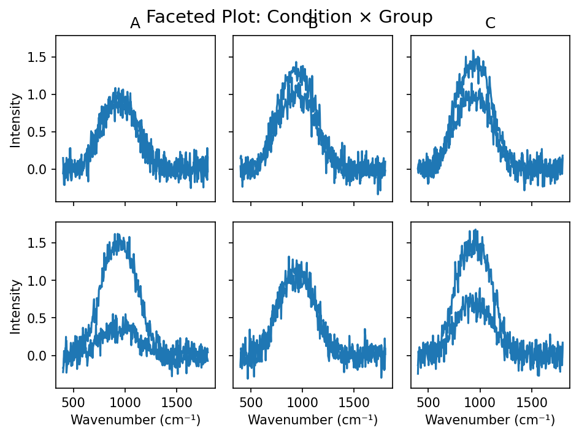
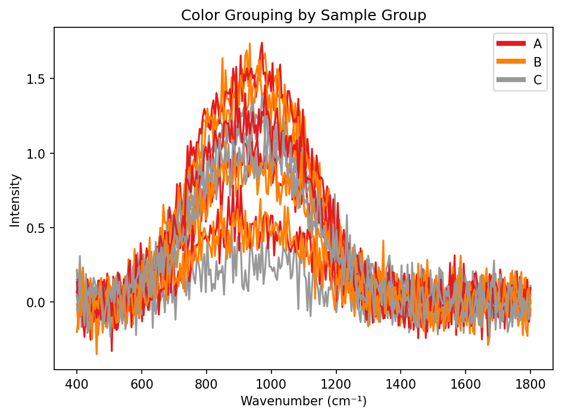
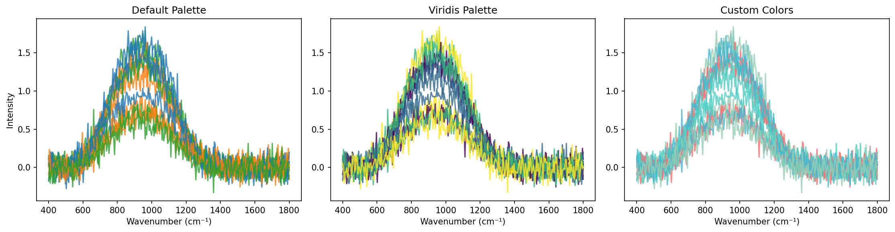
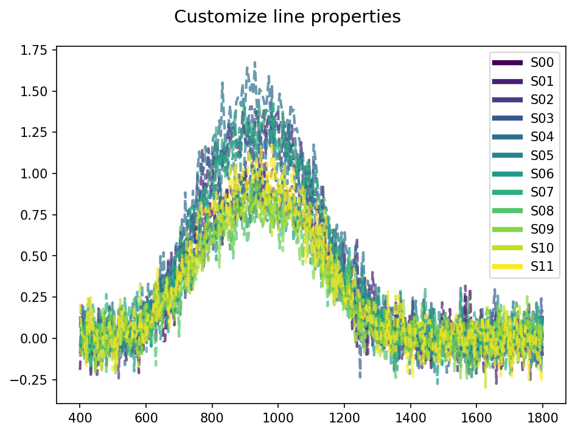
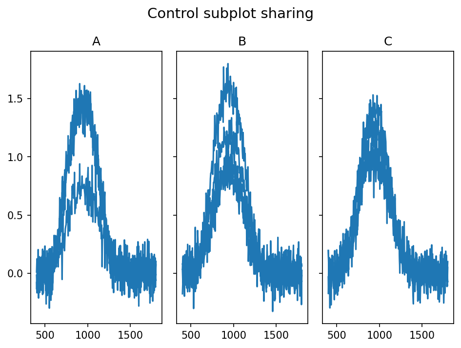
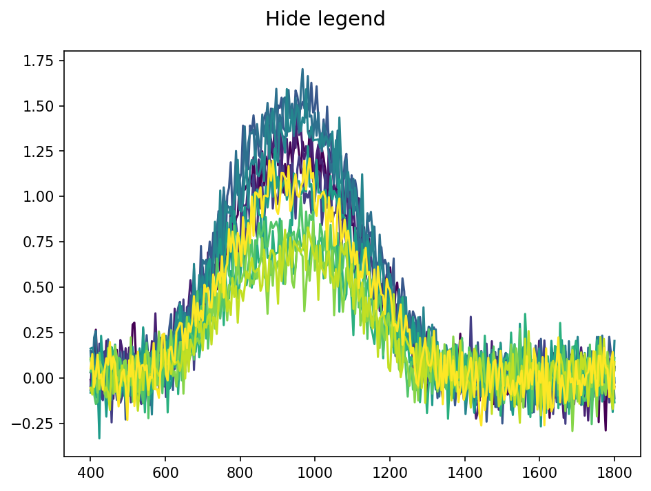
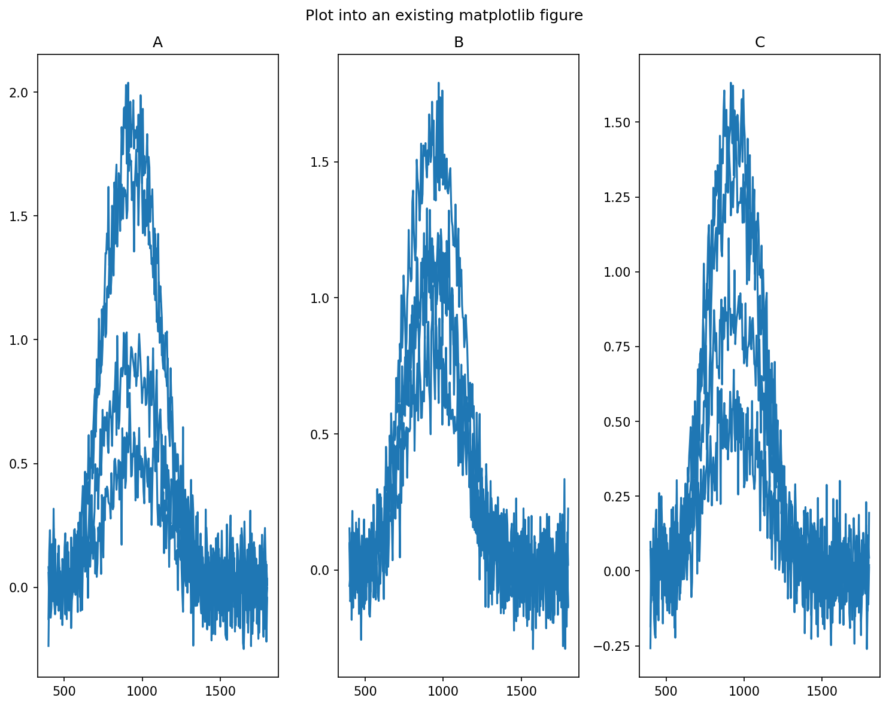
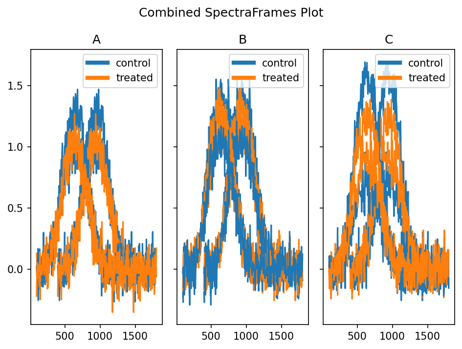
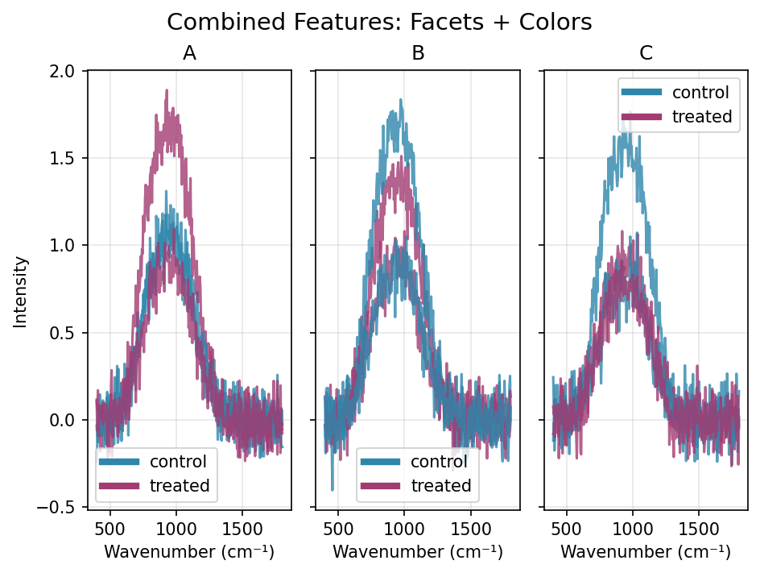

Visualization¶
This guide covers the visualization capabilities for plotting spectral data.
The main plotting functionality is provided through the SpectraFrame.plot() method, which offers flexible faceted plotting with customizable grouping and coloring options.
The plot() method returns a tuple (fig, axs):
fig: matplotlib Figure objectaxs: numpy array of matplotlib Axes objects (2D array, even for single plots)
This allows for further customization of individual subplots.
Basic Plotting¶
The simplest way to plot spectral data is using the plot() method without arguments:
import pyspc
import numpy as np
# Create sample data
wl = np.linspace(400, 800, 100)
spectra = np.random.randn(10, 100)
sf = pyspc.SpectraFrame(spectra, wl=wl)
# Basic plot
fig, axs = sf.plot()

Faceted Plotting¶
Create subplots organized by rows and columns using metadata columns:
import pandas as pd
# Add metadata for grouping
sf.data = pd.DataFrame({
'sample': [f'S{i:02d}' for i in range(12)],
'group': ['A', 'B', 'C'] * 4,
'condition': ['control', 'treated'] * 6,
'intensity': np.random.uniform(0.5, 2.0, 12),
'concentration': [1, 2, 3, 4] * 3
})
# Plot by condition (rows) and group (columns)
fig, axs = sf.plot(rows='condition', columns='group')
# Single facet by group
fig, axs = sf.plot(columns='group')

Color Grouping¶
Use the colors parameter to group spectra by color:
# Color by group
fig, axs = sf.plot(colors='group')
# Combine faceting with colors
fig, axs = sf.plot(columns='group', colors='condition')

Color Palettes¶
Control the color scheme using the palette parameter:
# Use matplotlib colormap
fig, axs = sf.plot(colors='concentration', palette='viridis')
# Use custom color list
custom_colors = ['#FF6B6B', '#4ECDC4', '#45B7D1', '#96CEB4']
fig, axs = sf.plot(colors='concentration', palette=custom_colors)
# Default matplotlib color cycle is used if not specified
fig, axs = sf.plot(colors='group')

Plot Customization¶
Pass additional matplotlib parameters through **kwargs:
# Customize line properties
fig, axs = sf.plot(
colors='sample',
alpha=0.7,
linewidth=2,
linestyle='--'
)



Working with Existing Figures¶
Plot into an existing matplotlib figure:
import matplotlib.pyplot as plt
# Create figure with custom layout
fig, _ = plt.subplots(1, 3, figsize=(10, 8))
# Plot into existing figure
fig, axs = sf.plot(columns='group', fig=fig)
# Further customize
fig.suptitle('Spectral Analysis Results')
plt.tight_layout()

Plotting Multiple SpectraFrames¶
Using existing figures, you can plot multiple SpectraFrame objects together:
Use with caution
Currently this feature is unstable. Especially, it would not work if different figure layouts are expected. Also, matching legends can be tricky.
sf1 = generate_sample_data()
sf2 = sf1.copy()
# Modify second SpectraFrame to have different metadata
sf2.wl = sf2.wl - 300
fig, axs = sf1.plot(columns='group', colors='condition')
fig, axs = sf2.plot(columns='group', colors='condition', fig=fig)
fig.suptitle('Combined SpectraFrames Plot')

Complete Example¶
Here's a comprehensive example that combines faceting with color grouping:
import pyspc
import numpy as np
import pandas as pd
import matplotlib.pyplot as plt
# Generate sample spectral data
wl = np.linspace(400, 1800, 200)
n_spectra = 12
spectra = np.random.randn(n_spectra, 200)
# Create SpectraFrame with metadata
data = pd.DataFrame({
'sample': [f'S{i:02d}' for i in range(n_spectra)],
'group': ['A', 'B', 'C'] * 4,
'condition': ['control', 'treated'] * 6,
'intensity': np.random.uniform(0.5, 2.0, n_spectra)
})
sf = pyspc.SpectraFrame(spectra, wl=wl, data=data)
# Create comprehensive plot
fig, axs = sf.plot(
columns='group',
colors='condition',
palette=['#2E86AB', '#A23B72'],
alpha=0.8,
linewidth=1.5
)
# Add labels and title
fig.suptitle('Spectral Data by Group and Condition', fontsize=16)
for ax in axs.flat:
ax.set_xlabel('Wavenumber (cm⁻¹)')
ax.set_ylabel('Intensity')
plt.show()

Return Values¶
The plot() method returns a tuple (fig, axs):
- fig: matplotlib Figure object
- axs: numpy array of matplotlib Axes objects (2D array, even for single plots)
This allows for further customization of individual subplots:
fig, axs = sf.plot(columns='group')
# Customize individual subplots
axs[0, 0].set_title('Group A')
axs[0, 1].set_title('Group B')
axs[0, 2].set_title('Group C')
for ax in axs.flat:
ax.grid(True, alpha=0.3)
Interactive Examples¶
For hands-on practice with these visualization features, see the interactive Jupyter notebook that includes all the examples shown above with reproducible code.